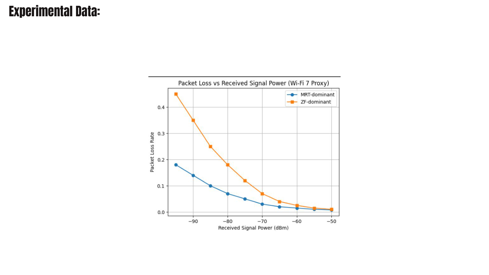

The link is fine.
Then it is gone.
Wi-Fi 7 and 6G beamforming does not degrade. It collapses — at a sharp boundary we call the Coherence Cliff. WaveLynk computes one physics-derived number, sees the edge coming, and changes precoding strategy before the fall.
Walking speed breaks it.
Zero-Forcing removes interference by inverting the channel matrix. That inverse is also the weakness: the moment the estimate goes stale, it amplifies error instead of cancelling it. Keep scrolling to raise the index and watch the two strategies separate.
Estimate is fresh. The inversion is well conditioned and ZF delivers peak throughput.
Doppler frequency of a 1.5 m/s walk at 6 GHz.
Coherence time — how long the estimate stays true.
Typical CSI feedback delay: already 36–57% of T_c.
Four failure modes, multiplied.
The Conditioned Coherence Index folds spatial conditioning, temporal decorrelation, signal quality and estimate age into one product. Any single term going bad drags the whole index toward the threshold — which is exactly the early warning ZF never had.
Fresh estimate. Every term near its ceiling — ZF inverts a channel it still knows.
How violently ZF amplifies a CSI error — the spatial instability factor.
Bessel function of the first kind: how fast the channel moves with the user.
Normalized signal-to-interference term, so link quality scales the verdict.
Exponential penalty on how stale the channel estimate has become.
W = WMRT if CCI ≥ γ
Hysteresis on the return path keeps the controller from oscillating at the boundary.
Substituting a typical feedback delay τ ≈ 0.3·Tc into the Bessel term gives J₀(0.8) ≈ 0.7. The normalized correlation product crosses below 0.6 at that operating point — the onset of ZF instability. The threshold is derived, not tuned.
Predictive, not reactive.
Every existing mechanism waits for a measurable drop. By then the cliff is behind you. WaveLynk runs entirely on quantities the base station already has.
Read what you already have
Estimate CSI age τ, Doppler shift fD and condition number κ(H) from standard CSI feedback. No new hardware, no extra signalling overhead.
Score the channel each frame
Compute CCI in real time. As it climbs toward γ = 0.6 the controller knows the cliff is ahead, while throughput still looks perfectly healthy.
Hand off before the fall
Move the precoder to MRT, which tolerates stale CSI, then return to ZF once the channel settles. Peak throughput kept, collapse never reached.
The whole framework is open source — CCI computation, a Jake's-fading MIMO simulator, both precoders, and the adaptive controller — with four notebooks that reproduce every figure in the paper from scratch.
100 trials on real hardware.
Netgear Nighthawk Wi-Fi 6/7 router on the 6 GHz band. One laptop serving iperf3, two clients stressing the MU-MIMO link, two phones logging throughput and RSSI — 100 independent trials comparing WaveLynk against always-ZF and always-MRT.
28% under always-ZF, 17% under WaveLynk.
65 ms down to 44 ms at −80 dBm.
45% down to 5% at the same signal power.
| Metric | Always ZF | Always MRT | WaveLynk | vs. ZF |
|---|---|---|---|---|
| Outage rate | ~28% | ~12% | ~17% | ↓41% |
| P50 latency at −80 dBm | ~65 ms | ~50 ms | ~44 ms | ↓32% |
| Packet loss at −80 dBm | ~45% | ~18% | ~5% | ↓89% |
| Failure mode | Sudden collapse | Gradual decay | Prevented | — |



How the project was built.
From an unexplained latency spike on a home router to a derived threshold, a simulator, a testbed and an IEEE-format paper.
A collapse that no model explained
Repeated throughput cliffs on a 6 GHz link while a user walked across the room. Existing link-adaptation models predicted a gradual decay; the measurements showed a step. That gap became the research question.
Deriving the Conditioned Coherence Index
Four known quantities — condition number, Jakes' Doppler correlation, normalized SINR and CSI-age decay — combined into a single product, then differentiated to locate the instability onset. γ = 0.6 fell out of the algebra rather than a parameter sweep.
A Jakes-fading MIMO testbench in Python
Rayleigh channel generation with realistic temporal correlation, both precoders implemented from the definitions, and the controller wrapped around them. Every paper figure is reproducible from the notebook.
100-trial Monte Carlo sweep
Randomized channel realizations, mobility profiles and feedback delays, to check the threshold was not an artifact of one configuration. The outage and latency gains held across the sweep.
Wi-Fi 7 testbed validation
A Netgear Nighthawk router at 6 GHz, one iperf3 server, two client laptops and two phones logging RSSI and throughput, across 100 trials from −50 to −80 dBm. Theory and measurement agreed on where the cliff sits.
Paper, poster and open-source release
Written up as an IEEE conference paper, with the full algorithm implementation, testbed data dictionary and simulation notebooks open-sourced under MIT for peer reproducibility.
Three authors, one high school.

Neha Abin
Derived the CCI and the γ threshold; built the fading channel model and simulation figures.

Sahil Shah
Designed and ran the Wi-Fi 7 testbed protocol across 100 measurement trials.

Yajat Parmar
Built the controller implementation, the notebook pipeline and the project site.
Read the paper.
Neha Abin, Sahil Shah, Yajat Parmar. "Predicting Beamforming Instability in Wi-Fi 7 and 6G Systems Using a Conditioned Coherence Framework." IEEE Conference Proceedings, 2025/2026.
Paper © IEEE. Personal use permitted. Software implementation released under MIT License.